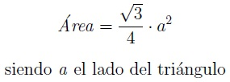

El triángulo equilátero es el polígono regular más simple. Sus tres lados son iguales. Por tanto, sus ángulos también son los tres iguales.
Al ser todos los ángulos iguales y ser la suma de los ángulos de 180º, sus tres ángulos interiores son de 60º (180º/3=60º).
Altura del triángulo equilátero
La altura (h) del triángulo equilátero se puede calcular a partir del teorema de Pitágoras. Los lados a, a/2 y h forman un triángulo rectángulo. Los lados a/2 y h son los catetos y a la hipotenusa.
Y obtenemos que la altura (h) del triángulo equilátero es:
Área de un triángulo equilátero
El triángulo equilátero tiene los tres lados iguales. Su área será un medio de la base (a) por su altura.
Sustituyendo la altura del triángulo equilátero, obtenemos:
Perímetro de un triángulo equilátero
El triángulo equilátero tiene los tres lados iguales, por lo que su perímetro será tres veces la longitud de uno de sus lados (a).
El triángulo isósceles es un polígono de tres lados, siendo dos iguales y el otro desigual.
Por lo tanto, los ángulos también serán dos iguales (α) y el otro diferente (β), siendo éste el ángulo que forman los dos lados iguales (a).
Altura del triángulo isósceles
La altura (h) del triángulo isósceles se puede calcular a partir del teorema de Pitágoras. Los lados a, b/2 y h forman un triángulo rectángulo. Los lados b/2 y h son los catetos y a la hipotenusa.
Y se obtiene que la altura h es:
En un triángulo isósceles, la altura correspondiente a la base (b) es también la bisectriz, mediatriz y mediana.
Área del triángulo isósceles
El área de un triángulo isósceles se calcula a partir de la base b (el lado no repetido) y la altura (h) del triángulo correspondiente a la base. El área es el producto de la base y la altura dividido por dos, siendo su fórmula es:
Perímetro de un triángulo isósceles
El perímetro de un triángulo isósceles se obtiene como suma de los tres lados del triángulo. Al tener dos lados iguales, el perímetro es dos veces el lado repetido (a) más el lado desigual (b).
Links de ayuda